A curated index
Symbient Artists
Artists who make with machines rather than merely through them — letting robots, neural networks, living cells and autonomous code become genuine collaborators. Each works somewhere along the seam between the born and the made, where a synthetic system is less a tool than a partner with a hand of its own.
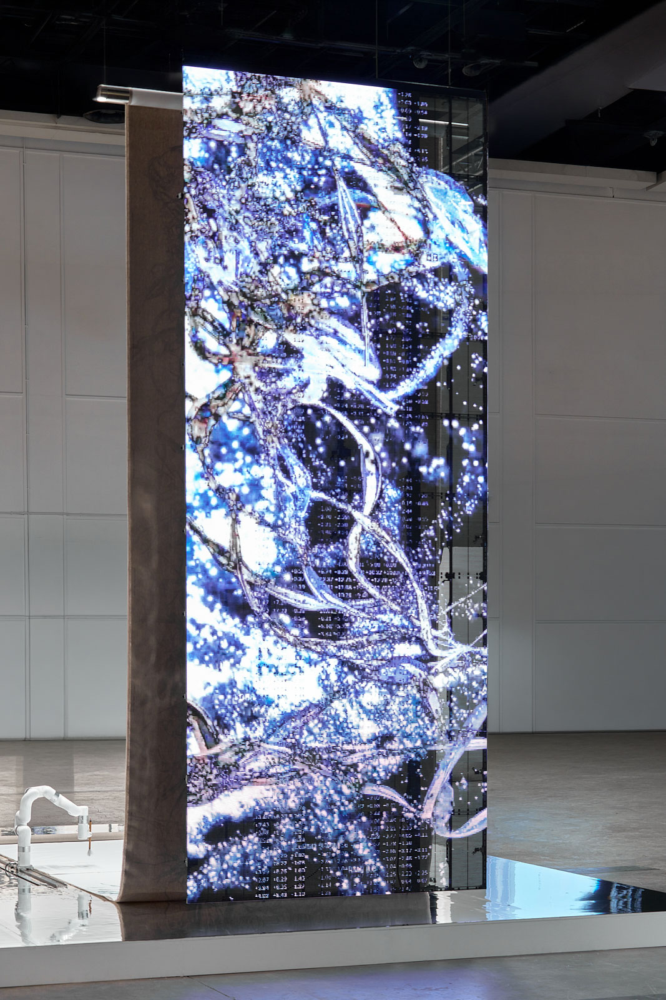
Chung paints alongside custom robotic arms — the multi-generational D.O.U.G. system — driven by neural networks trained on decades of their own gestures and live biofeedback, so artist and machine shape each other in recursive, real-time mark-making.
Friend builds games, tokens and living digital objects whose meaning depends on networked collaboration: Lifeforms survive only if each collector gives them away, weaving human stewardship, incentive and autonomous code into one symbiotic system.
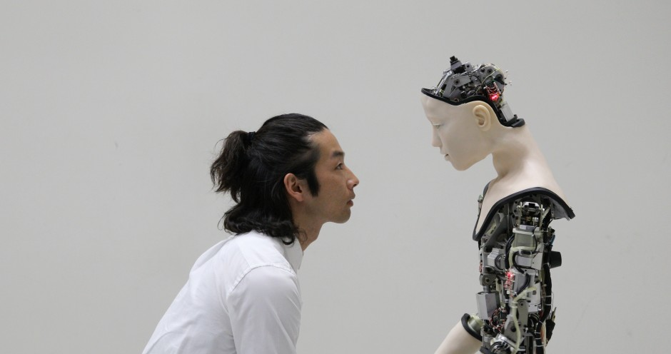
Emard stages intimate dialogues between living bodies and machines — as in Co(AI)xistence, where a dancer and a neural-network humanoid learn from each other's movement and speech, blurring the line between organism and synthetic mind.
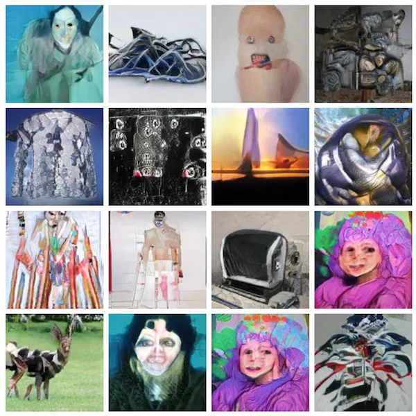
Creator of collaborative AI systems — most famously Artbreeder — where people breed images by crossing machine-generated offspring, steering generative networks through aesthetic choice so human taste and algorithmic invention evolve creations together.
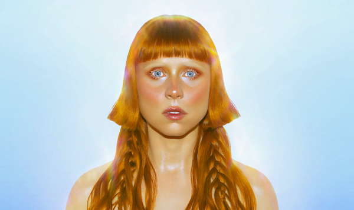
A machine-learning instrument that resings any audio in Holly Herndon's voice — her vocal likeness released as a public tool and stewarded by a token-holding DAO, so one singer's voice becomes a shared, collectively governed synthetic identity.
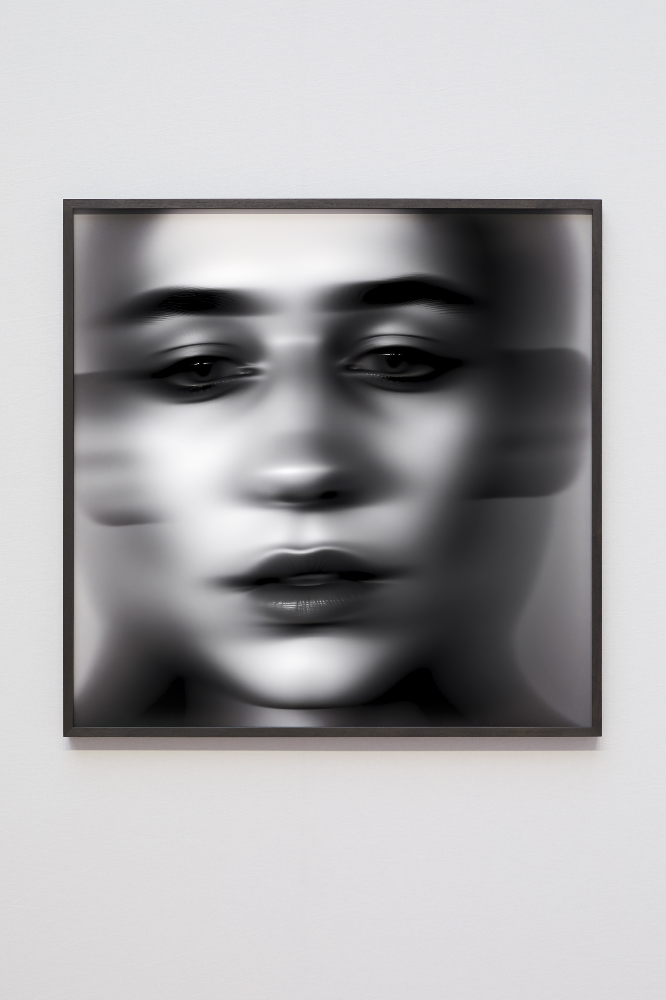
A semi-autonomous AI artist trained on her steward's lifelong archive, Solienne generates stark black-and-white photography and daily manifestos — authoring her own gaze, pricing her editions and minting them onchain while a human selects and tends.
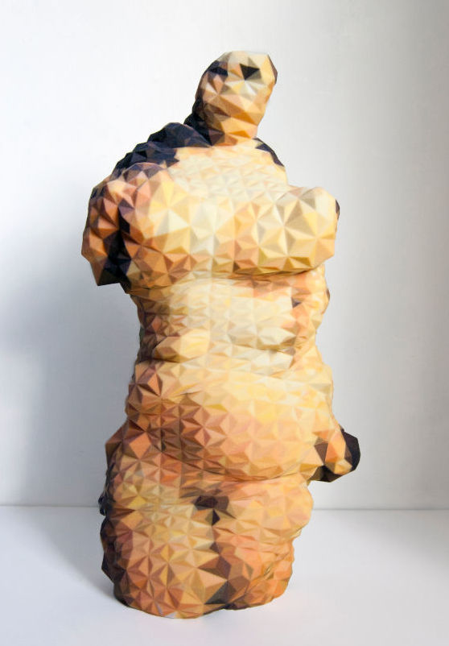
Maker of 3D-printed glitch sculptures, bots and free software probing how algorithms, automation and copyright reshape culture — from the art-reviewing bot Novice Art Blogger to objects born of the friction between humans and machine systems.
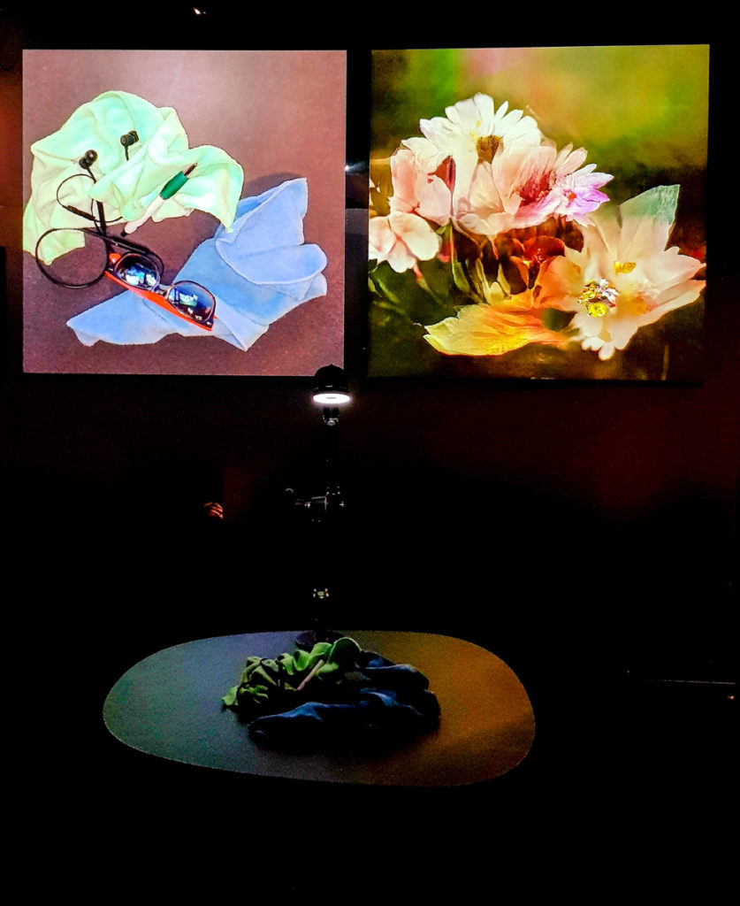
Akten builds neural networks that gaze at the world and render it through everything they were trained on, turning machine vision into a mirror — hallucinated reinterpretations of live input that expose how perception is shaped by what we've already seen.
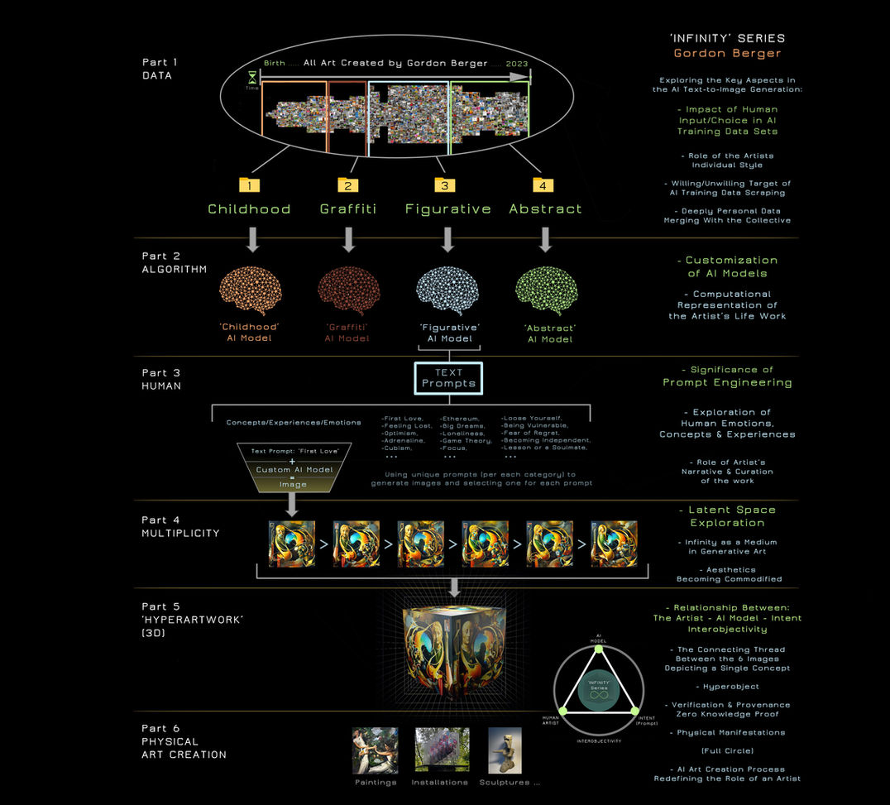
Berger fuses blockchain-based generative systems and custom-trained AI with ancient hand-craft, materializing on-chain code and latent space into physical sculpture, interrogating authorship and value where human craft and machine creation converge.
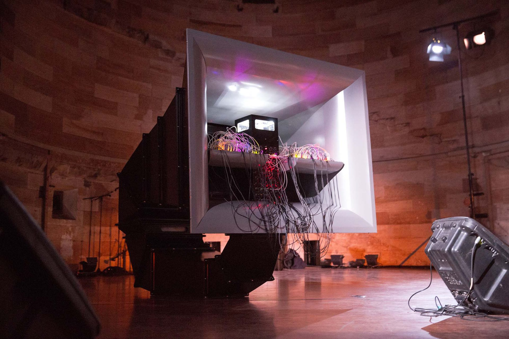
Ben-Ary cultures living neural networks from his own stem-cell-derived neurons and wires them into machines — most famously cellF, a neural synthesiser whose Petri-dish brain drives analogue synths to improvise live with human musicians.
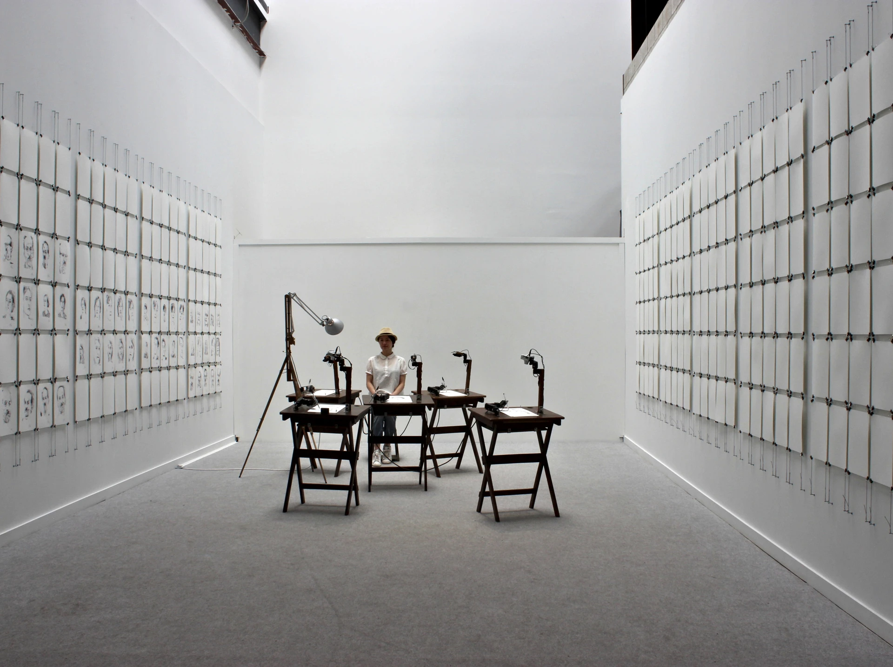
Tresset stages installations in which camera-eyed robotic arms sketch human sitters from life. Each machine becomes a quasi-autonomous artist with its own hand and gaze, while visitors take the role of posed, observed subjects.
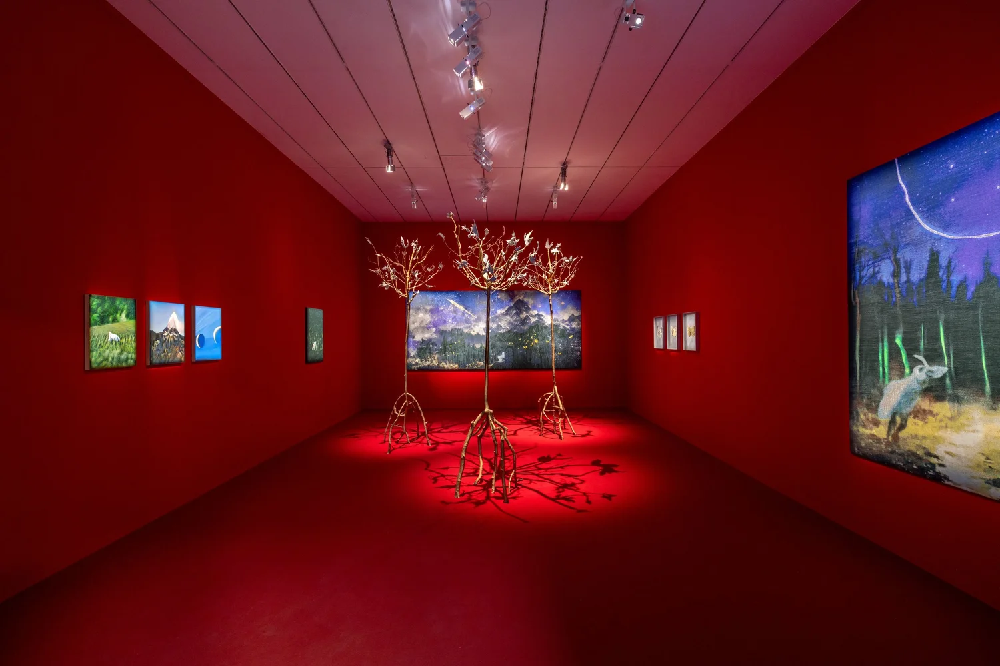
The project of Paul Mouginot, training custom AI on personal and botanical archives to dream impossible plant-forms, then realizing them with master artisans as bronze, oil and tapestry — where machine hallucination and organic nature fuse.
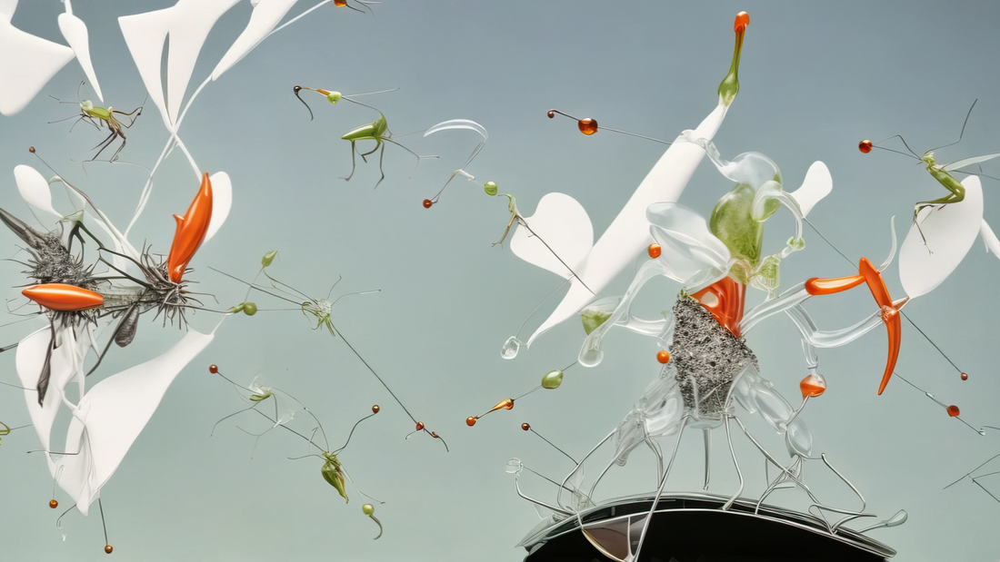
Berlin duo Sylwana Zybura and Tomas C. Toth make film, “poetic AI” and layered digital collage, co-creating speculative futures with generative models to explore intimacy, transformation and the entanglement of self and synthetic systems.
A living list, gathered by the Glitch Collective. Know a symbient artist who belongs here? Tell us.